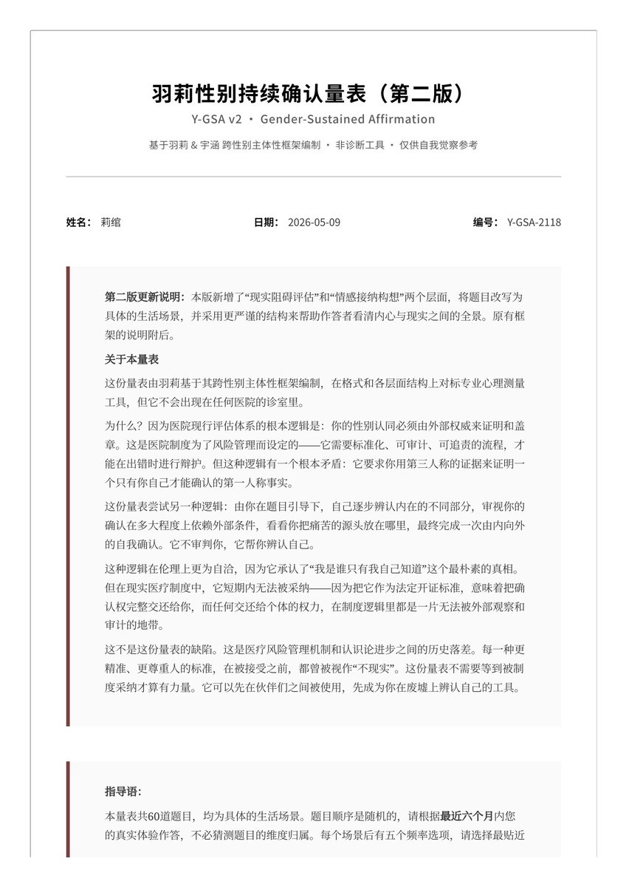
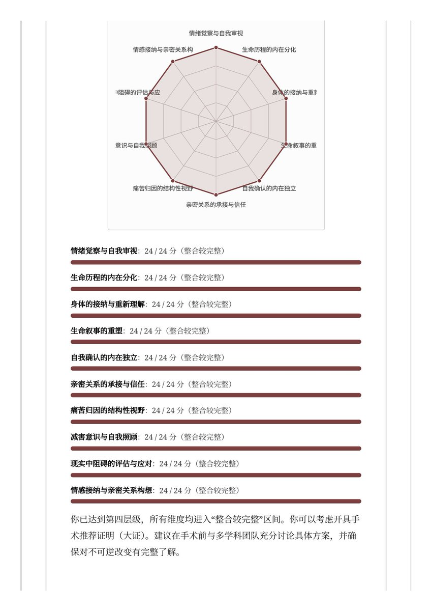
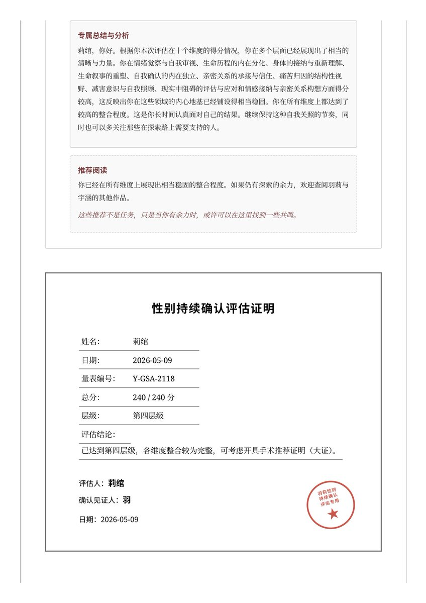

莉绾喵 🏳️⚧️🍥
@liwanmiaohy
需要这份量表的话，直接找我要 HTML 文件。拿到后用浏览器打开即可使用。做完自动出分，判定层级，根据维度生成你专属的分析和建议，和推荐阅读。且达到相应层级会生成带印章和签名的正式证明，可打印或保存为 PDF。



莉绾喵 🏳️⚧️🍥
@liwanmiaohy
羽莉性别持续确认量表（第二版）Y-GSAv2
基于羽莉&宇涵跨性别主体性框架编制的专业性评估工具。60道生活场景题目，涵盖10个维度，完成后自动生成专属总结分析和评估证明。它不是医院里的诊断工具，而是你在废墟上辨认自己的那座花园。第二版已完善题目指引和逻辑自检。
#MtF #量表 #羽莉 #性别认同 https://t.co/xgs8i78Qpo